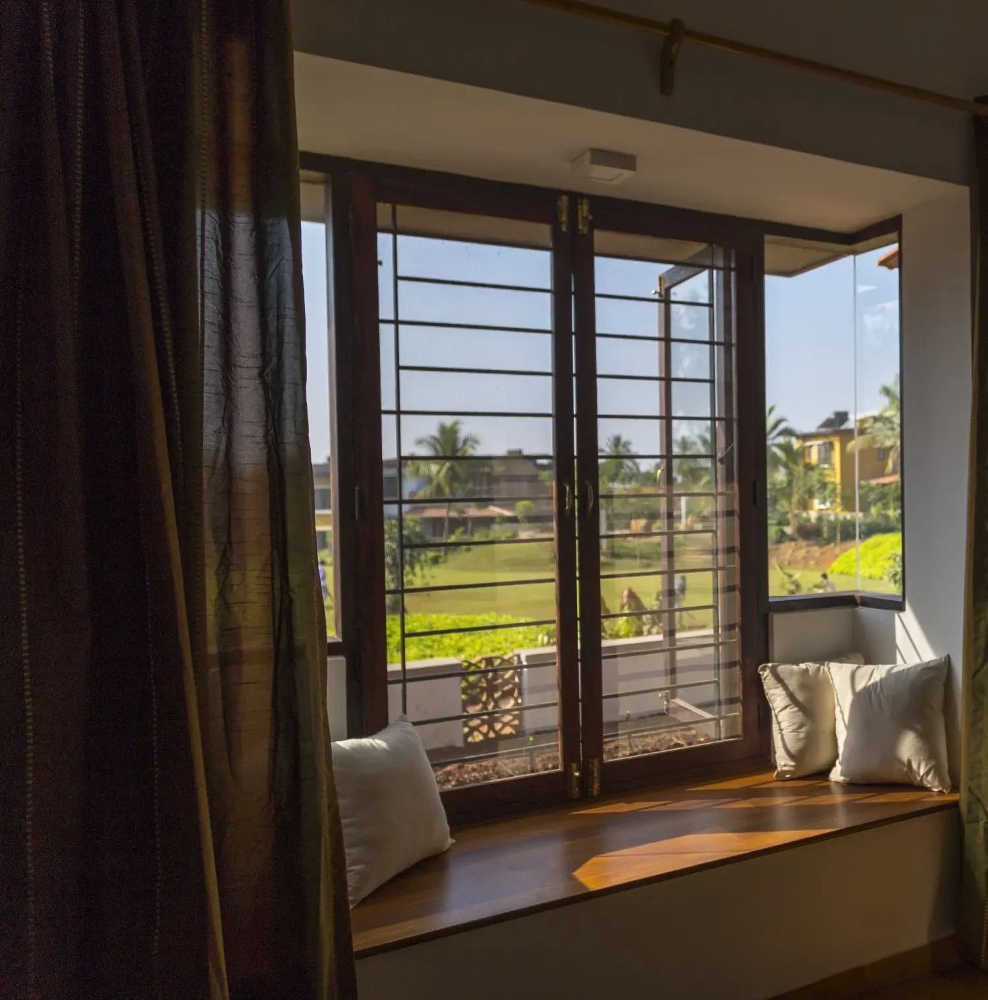

Imagine a quiet morning, cradling a cup of coffee or hot cocoa, as you settle into a cozy nook that offers a panoramic view of the world outside. Through the bay window, sunlight filters in gently, caressing blooming garden flowers. This isn't merely about visual appeal; it's the deep-seated emotion and tranquility that such a space offers amidst the everyday hustle.
In many homes, a bay window seat isn't just another piece of furniture; it's a delightful escape. It acts as a serene hideaway, drawing a soft line between the cozy indoors and the expansive world beyond. Settling into its cushioned embrace, one can momentarily press pause on the demands of life. Here, daydreaming is encouraged, introspection comes naturally, and the world outside feels both close yet beautifully distant. It's a spot that celebrates both the wonder of the outside and the peace of the inside. Beneath this seamless harmony lies a purposeful integration of architectural design.
What is a bay window seat?

A bay window seat is a unique fusion of furniture and architectural design. Unlike conventional furniture that can be moved around or replaced with ease, a bay window seat is a fixed feature. It is seamlessly integrated into the architectural blueprint of a room, becoming an intrinsic part of the structure itself.
In the initial planning stage of a home or interior space, architects and designers strategically position bay windows to optimize natural light, create a sense of space, and enhance the overall aesthetic appeal. The design process involves meticulous attention to detail, from determining the size and shape of the bay window to selecting the materials for the seat and surrounding elements.
The teak touch by GoodEarth
GoodEarth's bay window seats are an ode to the luxurious yet sustainable elegance of teak wood. With its rich hues, intricate grain patterns, and unmatched resilience, teak stands as nature's very own masterpiece. Its inherent warmth bathes the nook in a glow, making those moments by the window more intimate and memorable.
“We prioritize sustainability by repurposing smaller sections cut out from main doors, using them for our bay window seats. This approach ensures the complete utilization of large wooden sections,”
says Biju P, the Project Director and Head of Carpentry at GoodEarth.In essence, a bay window seat is a marriage of form and function. It seamlessly blends the comfort and style of furniture with the permanence and structure of architectural design. It exemplifies how thoughtful integration during the planning and design stages can transform a simple seating arrangement into a captivating and essential element of a room, enriching the overall living experience.